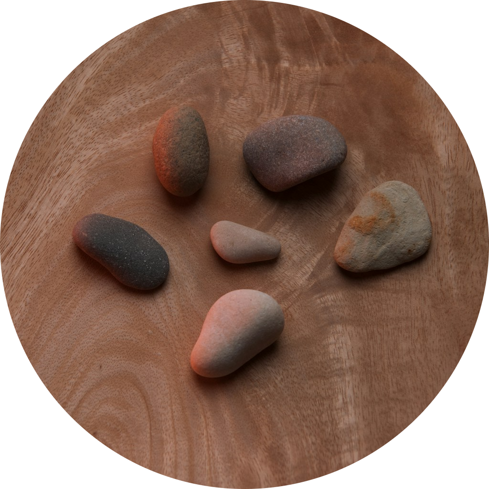

Warm Stones

the perfect snack for your mind
it's been a long day at work and global politics have upset your stomach? practice some self care with the help of warm stones
ingredients
- local pebbles
- mindfulness
- a positive mindset
- an essential oil of your choice
- rosemary
start cooking
some of the following steps are optional, however it is recommended that you follow through with this recipe as closely as possible. please don't forget to focus on your breath, your surroundings and your passing thoughts, while focussing completely on the task at hand.
- go outside and collect stones, they should easily fit into one of your hands
- feel their weight and reflect on why gravity seems to pull harder on the hand holding the stones. is it because of the added weight? or is there another reason you haven't understood yet? keep your mind open and listen to the texture of the stones you carry
- rinse the stones under flowing, cold waterand imagine what would happen if you did this for a century
- heat the stones in a pan on the lowest heat, add rosemary and an essential oil of your choice. let them absorb the heat for 10 minutes, turn them around and change their position from time to time.
- turn off the heat and after letting the stones cool down for at least 5 minutes, gently place them on a piece of wood with a tool of your choice. do not touch the stones.
- enjoy the stones by hovering your hands above them. they might appear to cool down again, but you can rest assured: if you followed the recipe their core will stay warm forever
go back